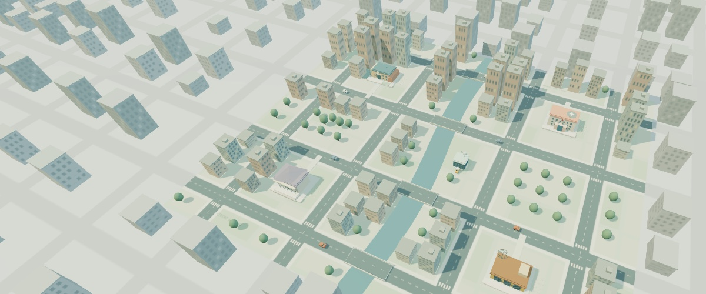

LABORATORIO ARCADE
Scegli il tuo gioco
BASI DI DATI · SQL
Archivio Ombra
PROGRAMMAZIONE · C++
Programma il robot

SISTEMI E RETI
Rete Zero
La città è isolata. Ripristina le comunicazioni.
Il progetto
Sono DOMECOSE. Questo progetto nasce mettendomi nei panni di un ragazzo in classe. «Perché dovrei impararlo? Dove mi servirà?» Credo in una didattica innovativa che parta da queste domande.
Con la gamification e lo storytelling, un concetto di informatica diventa la chiave per trovare un indizio, muovere un robot o ricollegare una città. In classe si può partire da quella sfida per provare, sbagliare e capire insieme cosa ha funzionato. È così che un concetto può diventare più facile da ricordare.